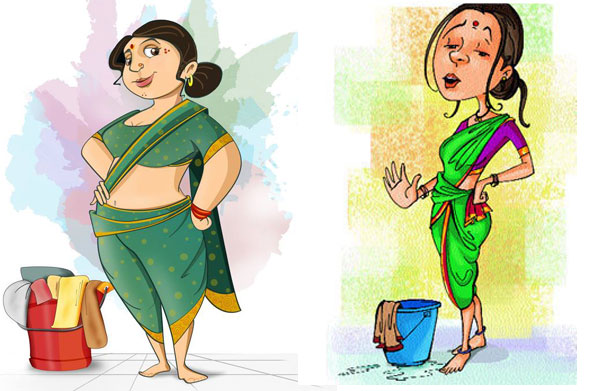

“मऊशी” सख्खी नाही हो आपली रोजचीच कामवाली, कुणाकडे आज्जी येते तर कुणाकडे काकू पण माझ्याकडे मऊशीच येते. कारण ती नसली की घर खूप सुनसुन, उदास वाटतं. प्रसन्न कसं वाटेल? घाण जे झालेलं असतं. भांडे तसेच सिंकमध्ये घरात सगळी धूळ मी कामवाली झाल्यामुळे मी पण थकलेली उदास. म्हनुण आई मरो पण मऊशी जागो या उक्ती प्रमाणे मी मऊशीच म्हणते. तसं पहिलं तर मी खूप मऊश्या बदलल्या पण त्यांच्यावरच प्रेम काही कमी होऊ दिलं नाही. सगळ्यांनीची स्टोरी वेगवेगळी. लग्न झाल्यावर आमच्या हयंच्याकडे एक भैय्या यायचा कामाला तो म्हणला मै ही आताहू दीदी. मी म्हणल नको रे बाबा असं पुरुष माणसाकडून काम करून घ्यायची सवय नको लगायला नाही तर तू गेल्यावर माझा नवरा बिचारा कामवाला व्हायचा. वरतून असं कर तसं कर समजाऊन सांगताना नाकेनऊ उडतील माझे. बायकांची कामे काटेकोर किचकट असतात ती कुठल्याच पुरषाला जमण तसं कठीणच.
बर म्हणून त्याच्या बायकोला पाठवतो म्हणला. त्याची बायको सुंदर नाजुक 3 मुलींची आई. पण कामात कडक, स्वच्छ. नवरा चांगला नाही भेटला तरी चालेल पण कामवाली चागंली भेटायला नशीब बलवत्तर हवं. कारण नवरा काय कसाही असला तरी काही वर्षाने बावळट ठरवला जातोच. वरतून त्याला ठोकून ठाकून नीट करता येतो. कामवाली ला ठोकायला गेलो की तीच धूम ठोकते. तर अशी ही आमची भैय्या ची बायको भाभी. तीच काम पाहून मी तिला पोळ्याही लाउन टाकलं. कारण माझे java चे क्लास आणि हयांचा जेवायचा वेळ एक येत होता. फक्त आम्ही शनिवार-रविवार भेटणारे नवरा बायको होतो. तरी यातून मी पोटूशी राहिले. देवाची कमाल! मग काय भाभी 1 वेळच जेवण ही बनवू लागली. माला मुलगी पाहिजे हे आइकून तिलाही छान वाटलं. मुलाची इच्छा असणारी ती तिच्या सुंदर 3 पर्यांलना English मीडियम मध्ये शिक्षण मिळावे म्हणून काम करत होतीच. मला मोठ्या बहिणीसारखं खूप जपल तिने, अजूनही कॉल करतो आम्ही एकमेकींना. चांगली मऊशी सोडावी लागली मला, जेवण जात नव्हत वजन कमी होत होतं म्हणून आई जवळ राहयला आलो. इकडे तर मउश्याच मऊश्या भेटल्या मला.
सुलोचना नावाची माउशी होती म्हणजे ती आहे पण माझ्याकडे कामाला नाहीए. तिला हाय बीपी होता तरी काम करायची. चांगली होती ती पण माझा आणि पाखी माझी मुलगी दोघांची खूप काळजी घ्यायची पण नशीब खराब माझं, तिचा बीपी हाय झाला आणि मला बाय म्हणून गेली. त्याननतर मात्र आजपरियांत मी माझी आयडियल मऊशी शोधत आहे. आलेल्या २ ते ३ महीने काम करून, no match found म्हणत सोडून जातात नाहीतर मी काढून टाकते. पण त्यांच्यात पण एक खमकी बाई लावली होती मी पोळ्याला अशी भांडखोर की घरचा राग काढयला तिला मीच भेटत होते. I also don’t have any option, operation झाल्यामुळे मला जमत नव्हते. फ्कत १ महिना काम करून मी तिला काढून टाकलं. जाताना खूप भांड भांड भांडली मी पण म्हणल करून घे तुझी इच्छा पूर्ण. आता बिचारी कुणावर राग ना काढू शकल्याने त्रस्त झालेली असू शकते. मला सगळ्यां माझ्या मऊश्याची खूप खूप आठवण येते. खूप आल्या न खूप गेल्या पण हर एकीचा माझ्या मनावर एक अलगच शिक्का आहे. किती लोकं येतात आपल्या आयुष्यात पण ह्यांची जागा कुणीच भरू शकत नाही. आणि लोकांना वाटतं काय उगीच काहीतरी बोलते. पण ज्याची जळते त्यालाच कळते. समस्त मऊशी वर्गाला समर्पिती आम्हा “तेरे बिना जिंदगी से कोई शिकवा तोह नही” तुमच्या आठवणीत हे गाणे म्हणणार्याय महिला वर्गाकडून.
Copyright © All rights reserved | This template is made with by Colorlib
{kind=link}
Leave a comment